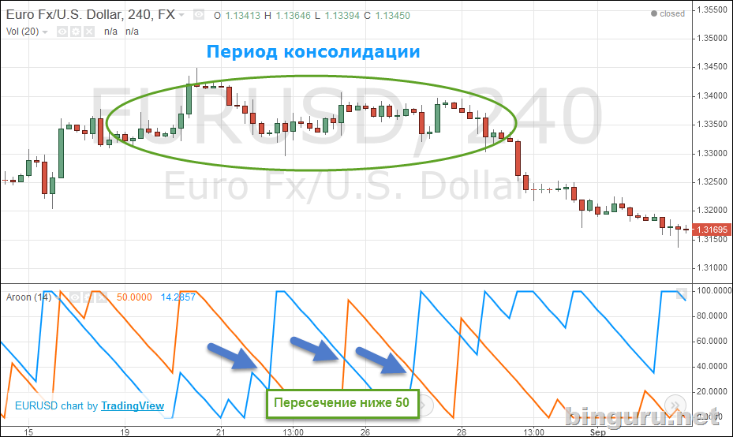

- Создатель Aroon
- Формула Aroon
- Основы Aroon
- Использование Aroon
- Консолидация
- Aroon для трендов
- Aroon для бинарных опционов
- Настройка
- Итоги
Продолжаю неспешный обзор основных индикаторов. Что такое Aroon (читается “арун”)? Это весьма своеобразный технический осциллятор, состоящий из двух линий. Они же линии Aroon Up (вверх) и Aroon Down (вниз). Основан индикатор на определенном периоде времени, который можно изменить.
При этом для Aroon Up (вверх) берется наивысшее значение цены за 14 дней и определяется число по шкале от 0 до 100. Для Aroon Down (вниз) все ровно наоборот, только берется низшее значение цены.
Задача этой циферки по шкале от 0 до 100 – определить, в цифровом виде, силу тренда, если он вообще есть.
Чем ближе, в результате, линия к 100, тем тренд сильнее. Так что это трендовый осциллятор в чистом виде. Его также используют для определения периода консолидации, когда цена движется в плавном боковом движении.

Помните: любой индикатор – лишь вспомогательный инструмент для технического анализа. Не используйте его слепо, как источник сигналов.
Создатель Aroon
Автор Aroon – это технический аналитик и автор нескольких книг Тушар Ченд (Tushar Chande). Американский изобретатель, что родился в Индии и разработал массу интересных вещей, особенно для фондового и фьючерсного рынков.

Из под его клавиатуры вышли такие индикаторы, как Aroon, Adaptive Stochastic Oscillator и VIDYA (Variable Index Dynamic Average).
Что касается именно Aroon, то сей продукт был разработан в 1995 году. Само слово переводится с санскрита, как “ранние лучи утренней зари”. Что намекает нам на возможность определить тренд заранее и поэтические понты автора.
Формула Aroon
Индикатор основан на значении, которое указывается пользователем. По умолчанию используется 14 дней.
Aroon для тренда вверх: ((14 – дней спустя макс. значения цены за 14 дней)/14) x 100;
Aroon для тренда вниз: ((14 – дней спустя мин. значения цены за 14 дней)/14) x 100.
Основы Aroon
Мы разобрались, что Aroon – индикатор трендовый, и как любой осциллятор, находится в определенном диапазоне. В данном случае, от 0 до 100. Суть проста:
- чем ближе к 100 – тем сильнее тренд;
- чем ближе к 0 – тем тренд слабее;
- тошниловка в районе 50 – консолидация, тренд может пойти в любую сторону.
Индикатор состоит из двух линий, синей и оранжевой.
- Оранжевая – Aroon Up.
- Синяя – Aroon Down.
Например. Если синяя (Aroon Down) больше 50 и ближе к 100, а вот оранжевая (Aroon Up) – меньше 50 – это указание на нисходящий тренд.
И наоборот: оранжевая больше 50 и ближе к 100, а синяя меньше 50 – привет восходящий тренд.
Использование Aroon
Задача Aroon – определения тренда. И делается это, в сущности, лишь 3 способами.
- Две линии пересекаются.
- Линии расходятся в разные стороны – одна выше 50 и ближе к 100, другая ниже 50.
- Одна из линий (или обе) касаются значения 100.
Этими тремя признаками и можно определить тренд. Пересечение, одна линия уходит за 50, другая под и, наконец, линия касается максимального значения 100. Бам, трендик полным ходом.
Консолидация
Другое применение Aroon – определение периодов консолидации. Это когда обе линии падают ниже значения 50. В результате, нет ярко выраженного восходящего или нисходящего тренда. Это особенно хорошо видно, когда обе линии одновременно падают вниз. Если это происходит, речь идет именно о консолидации.

Aroon для трендов
Это не самый популярный трендовый индикатор – многим людям сложно в нем разобраться. Видимо это связано с тем, что он не выглядит интуитивно понятным, а пересечения резкие и случаются достаточно часто. Но, это вопрос лишь практики и наблюдений.
Тренд, определяемый средствами базового технического анализа – это первое, что нужно делать. И лишь затем используется индикатор в тему.
Aroon для бинарных опционов
Тренд есть тренд. В бинарных опционах чаще работают на разворотных моделях, поскольку сам тренд и сколько он там наберет пунктов за время экспирации нам не особенно важно – это актуально для форекса.
Так что с помощью Aroon имеет смысл подтверждать сетапы прайс-экшн, обычные свечные модели и фигуры разворота.
Посмотрим на пример. Нам нужно начертить линию тренда, найти подходящую свечу или свечи и поймать начало нового тренда.
- Начертили линию тренда , тренд идет вниз.
- Aroon Down подтверждает тренд.
- Как видите, Aroon Down здесь уже просел – и мог быть соблазн войти на разворот тренда, но он был ложный – что нам и помогла найти линия тренда; зато удобно войти на отскоке по общему тренду.
- А вот самое интересное. Aroon Up занял свое место в верхней части графика, а две свечи (красный волчок и за ней полнотелая зеленая), своим поведением намекают на разворот.
Условия соблюдены – тренд разворачивается.
Другой пример. На этот раз войдем на отскоке сильного тренда.
- Aroon Up на своем месте, тренд идет вверх. Линию тренда мы тоже добавили.
- Aroon Down сменил Aroon Up. Но мы знаем – общий тренд вверх. Так что это намек на отскок.
- Таки да – после небольшой коррекционной волны, тренд продолжает движение вверх, что продлится еще несколько часов. Вход здесь хорош на середине этой длинной зеленой свечи (3), когда ее тело достаточно оформится.
Настройка
Аж две настройки. Первая – число дней, используемое при вычислении. По умолчанию, указано 14.
Второе – традиционно, стиль двух направляющих, Aroon Up и Aroon Down.
Толщина, цвет, меняйте что хочется.
Итоги
Честно говоря, я не думаю, что вы будете использовать Aroon. Это весьма специфический и малопопулярный индикатор. Но, возможно, кому-то он пригодится, ибо трендовых, не банальных индюков не так уж и много.
Ну а поскольку я намерен как следует обслюнявить на сайте все ключевые индикаторы теханализа (в русском интернете они описаны неважнецки), конечно же не мог пройти мимо достаточно молодого, но своеобразного Aroon.
Не забывайте, что индикаторы – хороший, но лишь вспомогательный инструмент. До использования любого индикатора на вашем графике уже должен быть проведен базовый анализ. Добавлены линии поддержки/сопротивления, линии трендов и каналы, изучены основные свечи. И лишь затем – индикатор. Не наоборот.